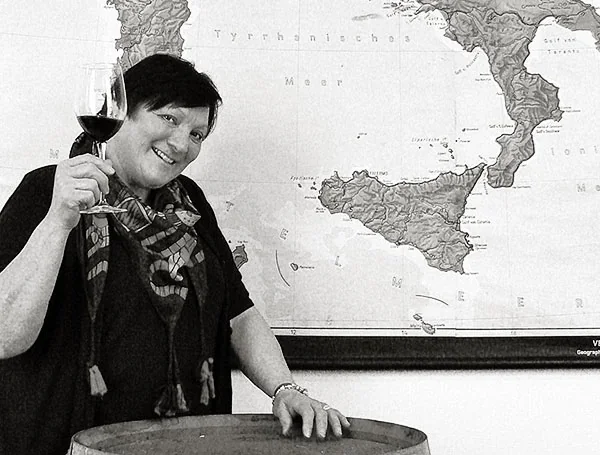
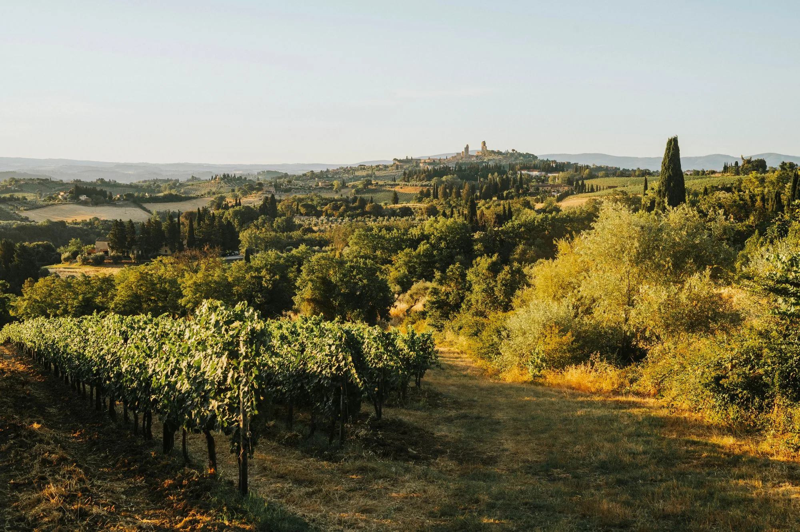
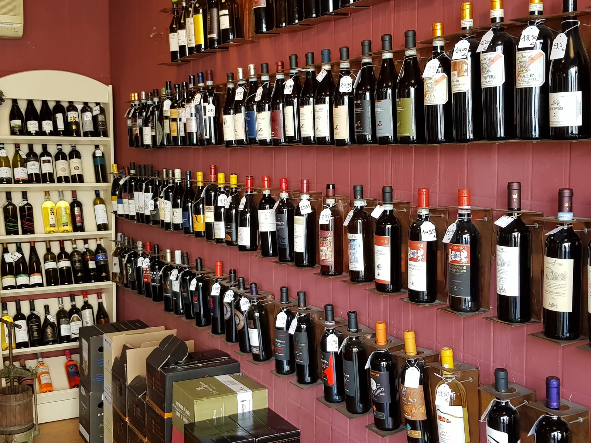
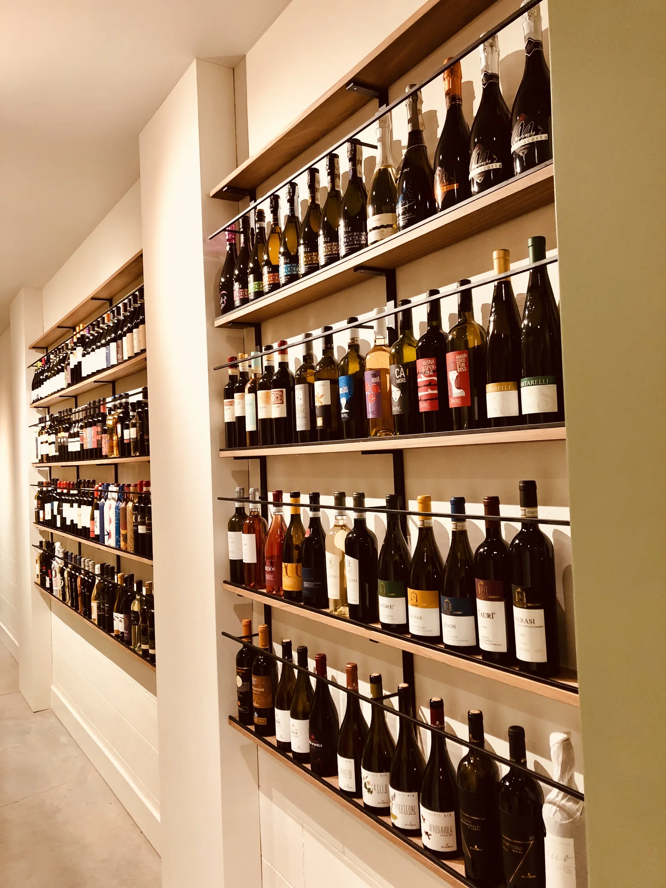
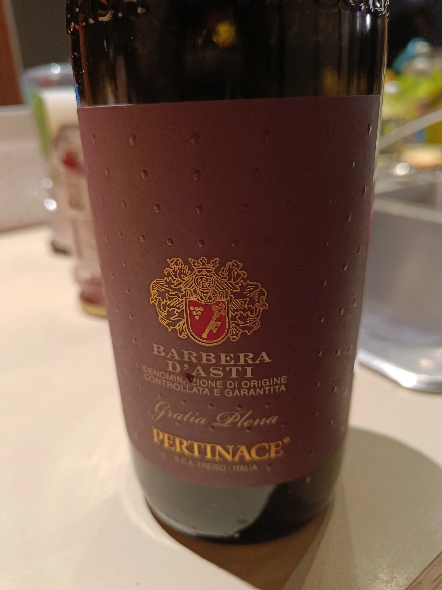
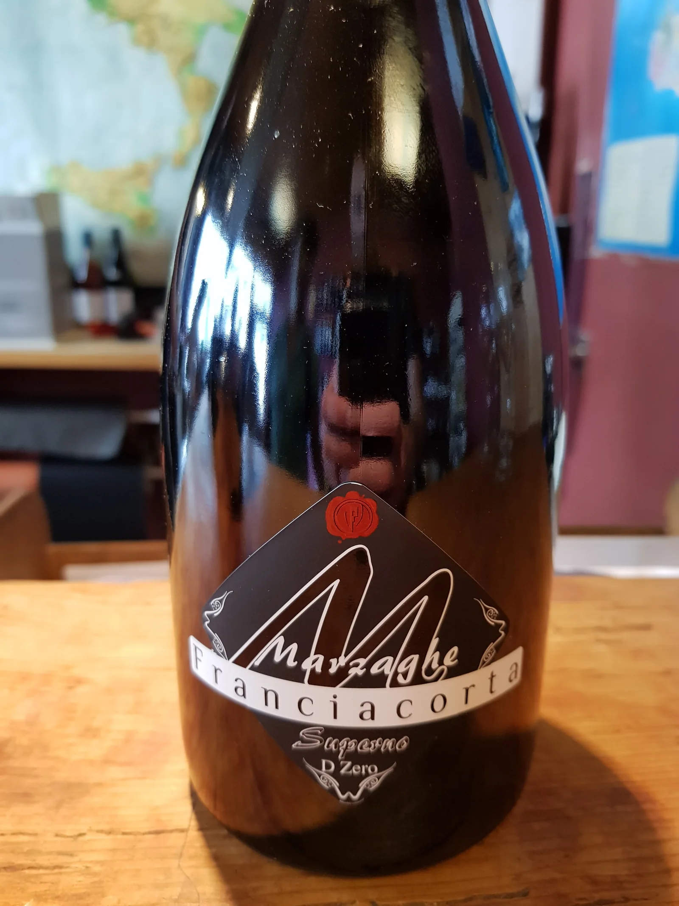
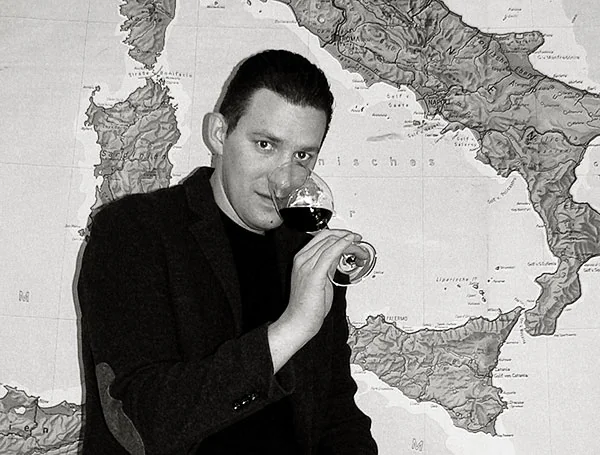

Silvana
Sommelier ConseilKind van Italiaanse migranten, met de wijnkennis bijna met de paplepel ingegeven. Na een loopbaan in de zorg koos ze volledig voor Italiaanse wijn.
Silvana en Michiel zoeken in heel Italië naar wijnen die typisch zijn voor hun streek en eerlijk geprijsd, en halen ze rechtstreeks naar Gent. Op vrijdag en zaterdag schenken we de wijnen van de week.

Op vrijdag en zaterdag staan we in de winkel en proef je de themawijnen van de week. Gewoon binnenlopen, iedereen is welkom.




Twee keer het diploma Sommelier Conseil, en een warme Italiaanse babbel bij elke fles.

Kind van Italiaanse migranten, met de wijnkennis bijna met de paplepel ingegeven. Na een loopbaan in de zorg koos ze volledig voor Italiaanse wijn.

Na zijn managementstudies volgde hij zijn moeder, haalde net als zij zijn diploma en maakte van Italiaanse wijn zijn voltijdse job.
Voor zaken en restaurants. De rest van de week bouwen we onze groothandel uit, zodat je onze wijnen op steeds meer leuke adresjes kan drinken.
Mail onsZoals steeds een professioneel wijn advies bij een warme Italiaanse babbel. Top adres met top mensen.
Uitbaters zijn heel professioneel en zijn op de hoogte van de producten die ze verkopen. Prijs kwaliteit een echte topper.
Goede service, lekkere wijnen !
Een webshop hebben we nog niet, maar bestellen kan gewoon per bericht. Vertel wat je zoekt, dan nemen we zo snel mogelijk contact met je op.
Ik maakte deze demo voor jullie om te tonen wat er kan. Na een kort gesprek maak ik er iets veel persoonlijkers van, helemaal naar jullie wens.
Vrijblijvend. Ik kom langs of we bellen.
Op maat, op jullie eigen domein.
Geen voorschot. Jullie betalen pas als alles klaar is.
Hosting, domeinnaam en kleine wijzigingen, zoals nieuwe openingsuren.
Omdat een voorbeeld meer zegt dan een mail. Zo zien jullie meteen wat er kan, en het kost jullie niets.
Nee. Het gesprek is vrijblijvend. Vinden jullie het niks, dan is het daarmee gedaan.
Na ons gesprek staat jullie site binnen 10 tot 14 dagen online.
Zeker. Jullie domeinnaam kan gewoon blijven, de nieuwe site komt in de plaats van de oude.
Nee, dat doe ik op basis van ons gesprek. Eigen foto's zijn mooi meegenomen, maar niet nodig om te starten.